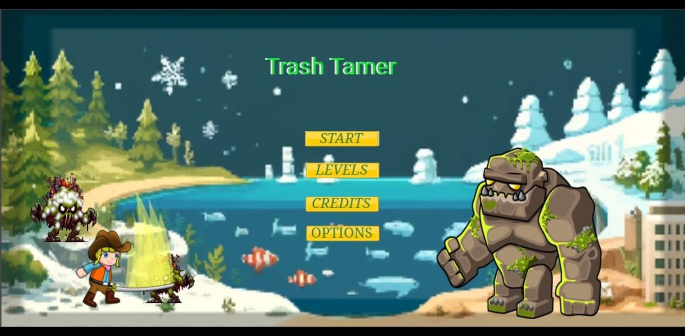

About the Game
Trash Tamer is an exciting game where you take on the role of a waste management expert. Your goal is to sort and recycle waste efficiently to keep the environment clean. With challenging levels and engaging gameplay, Trash Tamer tests your skills in sustainability and resource management.
Game Features
- Multiple levels with increasing difficulty
- Diverse waste types and recycling methods
- Leaderboard to compete with friends
- Educational content on waste management
Download and Play
Trash Tamer is available on PlayStore and Amazon AppStore. Download now and start taming the trash!
Download Trash Tamer on Amazon
Contact Us
If you have any questions or feedback, feel free to contact us(ychinnasamy48@gmail.com).